local_node_connectivity¶
- local_node_connectivity(G, s, t, aux_digraph=None, mapping=None)[source]¶
Computes local node connectivity for nodes s and t.
Local node connectivity for two non adjacent nodes s and t is the minimum number of nodes that must be removed (along with their incident edges) to disconnect them.
This is a flow based implementation of node connectivity. We compute the maximum flow on an auxiliary digraph build from the original input graph (see below for details). This is equal to the local node connectivity because the value of a maximum s-t-flow is equal to the capacity of a minimum s-t-cut (Ford and Fulkerson theorem) [R201] .
Parameters : G : NetworkX graph
Undirected graph
s : node
Source node
t : node
Target node
aux_digraph : NetworkX DiGraph (default=None)
Auxiliary digraph to compute flow based node connectivity. If None the auxiliary digraph is build.
mapping : dict (default=None)
Dictionary with a mapping of node names in G and in the auxiliary digraph.
Returns : K : integer
local node connectivity for nodes s and t
See also
node_connectivity, all_pairs_node_connectivity_matrix, local_edge_connectivity, edge_connectivity, max_flow, ford_fulkerson
Notes
This is a flow based implementation of node connectivity. We compute the maximum flow using the Ford and Fulkerson algorithm on an auxiliary digraph build from the original input graph:
For an undirected graph G having 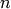 nodes and 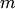 edges we derive a directed graph D with 2n nodes and 2m+n arcs by replacing each original node
 with two nodes 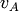, 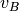 linked by an (internal)
arc in . Then for each edge (
with two nodes 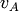, 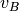 linked by an (internal)
arc in . Then for each edge ( , ) in G we add two arcs
(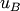, ) and (, 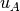) in . Finally we set the attribute
capacity = 1 for each arc in [R201] .
, ) in G we add two arcs
(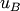, ) and (, 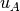) in . Finally we set the attribute
capacity = 1 for each arc in [R201] .For a directed graph G having nodes and arcs we derive a directed graph with 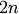 nodes and 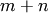 arcs by replacing each original node
with two nodes , linked by an (internal)
arc 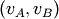 in D. Then for each arc 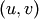 in G we add one arc
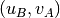 in . Finally we set the attribute capacity = 1 for
each arc in .This is equal to the local node connectivity because the value of a maximum s-t-flow is equal to the capacity of a minimum s-t-cut (Ford and Fulkerson theorem).
References
[R201] (1, 2, 3) Kammer, Frank and Hanjo Taubig. Graph Connectivity. in Brandes and Erlebach, ‘Network Analysis: Methodological Foundations’, Lecture Notes in Computer Science, Volume 3418, Springer-Verlag, 2005. http://www.informatik.uni-augsburg.de/thi/personen/kammer/Graph_Connectivity.pdf Examples
>>> # Platonic icosahedral graph has node connectivity 5 >>> # for each non adjacent node pair >>> G = nx.icosahedral_graph() >>> nx.local_node_connectivity(G,0,6) 5